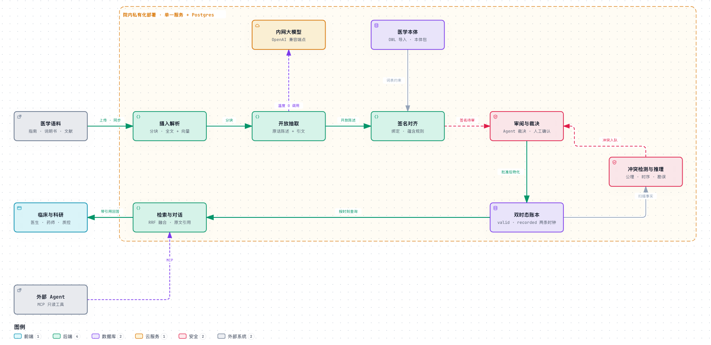

临床指南、药品说明书、专家共识按版本持续修订，旧推荐不会自己失效。
向量知识库只会「召回相似」，分不清哪条是现行版本、哪条已被接替。
静态知识图谱靠人工维护，本体一改就要整库重抽、重建。
医疗场景的追问永远是：这条结论出自哪份文件？当时是否成立？谁确认的？
上线即定格。更新靠人工重建，只能回答「现在库里有什么」。
新文档进入即被吸收，冲突被发现并治理，人的每次决策都让系统更准。
抽取只记录文档自己说了什么，提示词里不放本体。本体可以演进、可以改错；文档所说永远保留，随时可以按新本体重新对齐。
实体、文档自己的类别词、用原话写的陈述、引文与时间说法。例：某份指南里的一句推荐，连同原句一起入账。
类、关系、约束、继承与时态语义的词表。可选内置本体包，也可导入 OWL 格式的医学本体，或在工作台手改。
用本体属性表达的事实：开放陈述经签名对齐、人工确认后物化，自带世界轴与记录轴。

一个服务进程 + 一个 Postgres（含 pgvector）：任务队列就是表，全文索引在进程内；大模型走任意 OpenAI 兼容端点，可以完全留在院内网络。
→ 打开 Archify 交互版架构图服务进程 + 数据库，部署与运维面极小
内置本体包冷启动，另可导入 OWL 医学本体
可离线部署，模型与数据都不出院
新文档持续进入，只写开放图谱；已批准的签名直接复用，不必再调模型。
时序接替、同时两值、公理违反、引文对不上——结构异常优先暴露。
Agent 依据常识与业务文档裁决；低置信的进入人工审核队列。
人的决策写入账本、用于调优 Agent；绑定被缓存，同类陈述下次自动物化。
医疗复盘要的不只是「当时为真的是什么」，还有「系统当时知道什么」。
例：一条用药推荐自旧版指南起成立，新版发布时闭合，而不是被删除。
回到任意 as_of 时刻，都能看到当时系统知道什么、依据是什么。
改正从不原地覆盖；没写明起止时，以证据文档日期为锚，避免「自古成立」。
每条事实强制带原文引句；问答里的引用能点开原文分块。
实体合并、Agent 裁决、勘误都留有决策记录，随时可回滚。
时序冲突、自反、传递环、基数违规、本体缺陷，分队列治理。
确认、拒绝、合并、重建写入只追加的决策账本，支撑合规复盘。
文档是证据，本体是视图，事实有时间，结论可追溯。四件事做到，知识库才能随医学一起更新，而不是随时间一起过期。
新版发布自动吸收，旧推荐闭合而非删除，问答按时刻作答。
适应症、禁忌、相互作用陈述都带原文引句，便于药师核对。
制度修订后自动发现与旧条款的冲突，进入治理队列。
跨文献实体消歧与合并且可撤销，结论可追溯到段落。
通过 MCP 暴露只读工具，Agent 按时刻检索图谱与文档。
任一时刻「系统当时相信什么、依据是什么」都能回放。
每个设计取舍都有编号决策记录可查，数据库只向前迁移；数字取自 KEE 仓库本身。
例如某专科指南 + 院内制度；按知识库划分角色与权限，病历类语料先脱敏。
勾选内置本体包或导入 OWL 医学本体，接入院内 OpenAI 兼容模型端点。
低置信进入人工审核，人的决策回流调优 Agent——知识库越用越准。